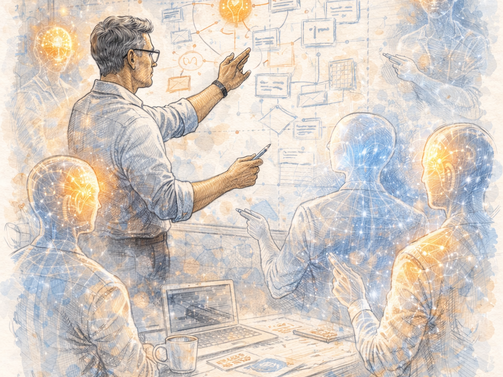

The Great Convergence: Product, Engineering, and the Age of AI
For most of modern software history, product and engineering were separated by necessity.
Product defined what should be built.
Engineering determined how to build it.
That division wasn't philosophical — it was economic. Writing reliable software was difficult, slow and expensive. Engineering capacity was the limiting factor, so organisations structured themselves around managing execution.
Product generated demand. Engineering rationed supply.
AI is changing that balance.
The Pendulum Swings Toward Product
Software has always required two things:
- building the thing right
- building the right thing
Historically, organisations obsessed over engineering excellence because execution was fragile. Code was the bottleneck. Delivery risk dominated decision-making.
AI reverses that imbalance.
As execution friction falls, mistakes in product thinking dominate outcomes. Technical errors are increasingly fixable. Strategic errors scale.
Human leverage shifts decisively toward product judgement.
Everything else follows from this shift.
Convergence Was Already Underway
Even before AI, the boundary between product and engineering had begun to blur.
The rise of the CPTO role, technically fluent product leaders, and outcome-focused engineering managers reflected a growing reality: decisions about what to build and how to build it cannot be separated cleanly.
Software teams were already converging toward shared ownership.
AI didn't start this trend — it accelerated it.
When Execution Stops Being Scarce
For decades, delivery slowed at implementation — coding, testing and deployment defined organisational pace.
Today, increasingly capable models can generate, refactor and validate large portions of software when guided by experienced practitioners. Execution scales in a way headcount never could.
The important change is not that AI writes code.
It is that execution is no longer the primary constraint.
And when a constraint disappears, attention moves elsewhere.
Engineering Was Mostly Pattern Application
Most software engineering has always involved applying known patterns to new contexts rather than inventing something fundamentally new.
AI happens to be extremely effective at pattern application.
This does not eliminate engineering expertise, but it reduces the amount of manual effort required to realise it. Many aspects of building the thing right become faster, cheaper and more repeatable.
Which exposes the harder problem.
The New Bottleneck Is Judgement
When software becomes easier to build, choosing what to build becomes harder.
You can now ship the wrong thing faster than ever.
The scarce capability becomes judgement:
- Which problems matter?
- Which trade-offs are acceptable?
- Which ideas deserve to exist?
This is why the most effective engineers increasingly resemble product leaders. Their work shifts from construction toward intent, framing and validation.
The role evolves from builder to director.
Smaller Teams, Larger Output
The emerging model is not teams augmented by AI.
It is small numbers of highly experienced operators directing systems of AI agents.
In this environment, traditional distinctions between product and engineering begin to matter less. The same individuals define problems, guide execution and validate outcomes.
Software development becomes less about producing code and more about specifying results.
What This Means for Organisations
Many organisations are still optimised for a world where engineering capacity is scarce.
They measure velocity, scale delivery teams and manage backlogs — all responses to yesterday's constraint.
The new challenge is different:
If building software is no longer the bottleneck, are you equipped to decide the right things to build?
Because in an AI-accelerated world, execution scales quickly.
Judgement does not.
Published: February 2025 | Get in touch to discuss how AI can transform your development process